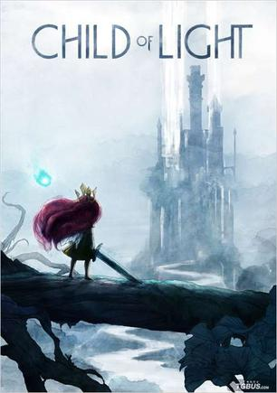

2016年11月
广播发布后不可编辑，所以每条都是那一刻的原话。
2016-11-28 18:30:26
 看过 神奇动物在哪里 / Fantastic Beasts and Where to Find Them ★★★★★
看过 神奇动物在哪里 / Fantastic Beasts and Where to Find Them ★★★★★
Palace Nova 的ExImaz厅，这个是普通厅的片源放到IMAX屏上的，挺不错～首先音乐满分，然后其次特效很不错，然后英文一般听不懂哈哈哈哈哈，一定得看一下中文版，顺便，片尾没彩蛋
2016-11-21 18:19:58
第一次剁手入正Gold版，这种专业相关的游戏真是没有抵抗力啊！！！
2016-11-21 18:09:15
玩过 极限巅峰 Steep ★★★★☆
滑翔伞看起来好好玩啊，但是好难控制，完全依赖于上升气流 sigh 目前玩的是open beta，bug还蛮多的 sigh 然后就是从一个点跑到另一个点真的好废时间啊，跑路有种魔兽世界的感觉
2016-11-21 18:05:56

画面和音乐都很有爱~ 回合制但是引入了child of light就很有趣了，可以在治疗和减速之间选一个，晚饭比一般的回合制有趣些~
2016-11-14 19:58:25
 看过 海底总动员2：多莉去哪儿 / Finding Dory ★★★★☆
看过 海底总动员2：多莉去哪儿 / Finding Dory ★★★★☆
很不错的电影啊，后天就要考Machine Learning了，我还在开小差 XD 电影不错，画面做的特别棒！章鱼也很搞笑，片尾也有彩蛋XD 但是美中不足的就是剧情比较简单，虽然各种搞笑元素也都有，但是综合一下还是8.5吧
2016-11-11 09:34:32
 看过 黑镜 第三季 / Black Mirror Season 3 ★★★★★
看过 黑镜 第三季 / Black Mirror Season 3 ★★★★★
真是过瘾，虽然前面的节奏有点乱，但是最后一集那种世界被科技毁灭而且束手无策的感觉真是细思恐极 :D
2016-11-10 21:14:06
 看过 美丽人生 / La vita è bella ★★★★★
看过 美丽人生 / La vita è bella ★★★★★
“This is the sacrifice my father made. This was his gift to me.” 难得的好片！本以为是大团圆结局，原来还是有牺牲。有了牺牲，故事才更壮烈、更传奇。贯穿全片的舞曲也好听啊~ 前60%剧情也是特别有趣 :D 真…
2016-11-09 18:12:11
相见恨晚啊，国际版的“简书”！
2016-11-08 21:16:30
喜欢日记：
2016-11-03 20:41:34
 玩过 席德·梅尔的文明VI Sid Meier’s Civilization VI ★★★★★
玩过 席德·梅尔的文明VI Sid Meier’s Civilization VI ★★★★★
BGM太好听！战棋的模式也很耐玩，然后就是可玩性太高了！不建议入坑，打开第一次肯定是在5小时以上 orz